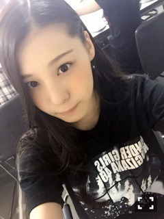
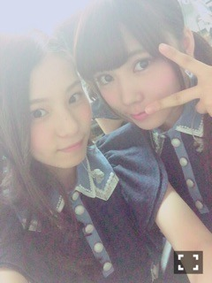
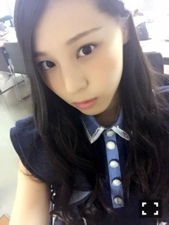
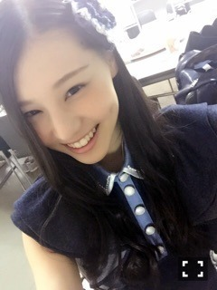
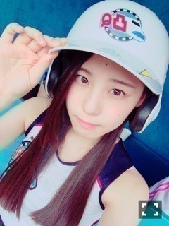

| 2015/08 21 Fri | 長いはりと短いはり_(．．*)vo l.40 |
みなさんこんばんはー！
さがらいおりです！

広島3公演
終わっちゃいました！！
もう折り返し、、(*_*)
早いなぁ
広島では
もみじまんじゅうをお土産に頂いたんだけど、
ライブの合間にも3個位食べて、
生もみじまんじゅうも食べて
大満足♡♡
しかも、いおりね、
お好み焼きとかあんまり食べなくて
広島風お好み焼きも
あんまりとか思ってたんだけどね、
ひなぴょんの一口もらったら
すっごい美味しくて
結局半分もらっちゃったの\( ˙▿˙ )/
本当に美味しかった～
でねでね、最近ね、
ひなぴょんと仲良しでね、
ライブの曲と曲の間とか
待機してるときに
いつも隣でお話したりしてるの♡
ひなぴょんすごい面白いんだよ( ´艸｀)

スモークがすごい、
次は福岡ー！
たのしみわくわくっ(^^♪
最近は
かりんちゃんとも前以上にたくさん
お話するようになったの！
でね、
前までは甥っ子の写真とか
｢見てみてー｣って言われなかったんだけどね
この前いおりに
｢見てみてー！｣って言って
見せてくれたの♡
嬉しかった( ˶ˆ꒳ˆ˵ )
甥っ子ちゃんも可愛かった( ˶ˆ꒳ˆ˵ )


初森べマーズ第六話
見てくれましたかー？？

ひかりです！
初めての演技のお仕事だったので
すごい緊張しました(*_*)！
でも衣装とか看板とかが
すごくこってて
まいちゅんと
｢すごーい見てこれ！｣って言いながら
キャッキャッしてました♡
とても楽しかったけど、
もっと勉強しなきゃなって思えました！
感想待ってますね♪♪
あ、ベッド新しくなって
ひまと寝ようかと思ったんだけど、
夏だから暑いし
毛抜けるし冬になってから一緒に寝る♡
まだまだ暑い日が続くと思うので
体調に気を付けてください＞＜！
ライブに来て下さる方も
水分補給したり体調が悪くなったら
無理しないようにして下さいね！
i o r i .

コメント(389)
2015/08/21 00:06